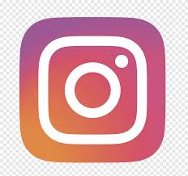
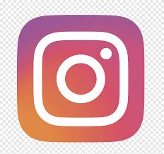

HAKKIMIZDA
Haziran ayında yayın hayatına başlayan Fen Bilimleri, çıkış noktası olarak bilim konularını referans almıştır. Bilim konuları ve bilişim teknolojileri ağırlıklı makale ve haberlerin yer aldığı kaynak site olarak tanımlayabileceğimiz ................... asıl amacı, kaliteli Türkçe içerik oluşturmak adına gayret göstererek, Türk internet mecrasına katkıda bulunmaktır. Site Kurucuları: ................................., ................. (memin[at]bilgiustam.com). Hakkımızda ..........., 1975 yılında Adana’da doğup büyüdüm. Bilgisayarla 10 yaşlarında oyunlar aracılığıyla tanışmış olup zaman içerisinde internetin popüler hale gelmesiyle birlikte kendimi bu uçsuz bucaksız mecranın içerisinde buldum. Üniversite döneminde ilgi alanlarımdan bilgisayar ve otomobil konularıyla bolca haşır neşir oldum. Kendimi; motor sporlarını yakından takip eden, otomobillere ve bilişim teknolojilerine son derece meraklı, ilgilendiği konuları teknik yönleriyle inceleyen ve her şeyini anlamaya çalışmak üzerinde kafa yoran, bunu yapmaktan da haz duyan birisi olarak tarif edebilirim :) Üniversitede Makine Mühendisliği bölümünden mezunum ve şimdi ilgi alanlarım yönünde bana oldukça uygun bir bölüm olduğunu rahatlıkla söyleyebiliyorum. Şu an kendi şirketim aracılığıyla mimari sistemler konusunda teknik danışmanlık hizmeti veriyorum. Sitemizin içeriğinden faydalanıp memnun kalacağınızı temenni ediyorum. ........, 1975 Adana da doğumluyum. Ortaokul zamanlarında başlayan bilgisayar tutkum her geçen gün artarak devam etti. Lise ve üniversite yıllarında bilgisayar programlama alanına yöneldim. İnternetin de yaygın hale gelmesiyle kendimi tamam anlamıyla bu dünyanın içinde buldum. İnternet yazılım dillerinden PHP yi iyi derecede biliyorum. Yazılım ve teknoloji alanında da gelişmeleri takip edip bilgi ve deneyimlerimi arttırmaya çalışıyorum. .................. sitesi de benim için öğrendiklerimi denemek ve test etmek için bulunmaz bir fırsat. Şuan özel bir şirkette programcı olarak çalışmaktayım. Ayrıca freelance olarak internet siteleri yapmaya devam ediyorum. Bilgisayar ve yazılım dışında fotoğrafla ilgleniyorum. Farklı yerler, şehirler gezip manzara/doğa fotoğrafları çekmeyi seviyorum. “Sitedeki yazıların izinsiz kullanılması veya bağlantı (bilgiustam.com) vermeksizin alıntılanması kesinlikle yasaktır.” Hakkın karşına çıkardığı değişimlere direnmek yerine, teslim ol. Bırak hayat sana rağmen değil, seninle beraber aksın. Düzenim bozulur, hayatım alt üst olur diye endişe etme. Nereden biliyorsun hayatın altının üstünden iyi olmayacağını?